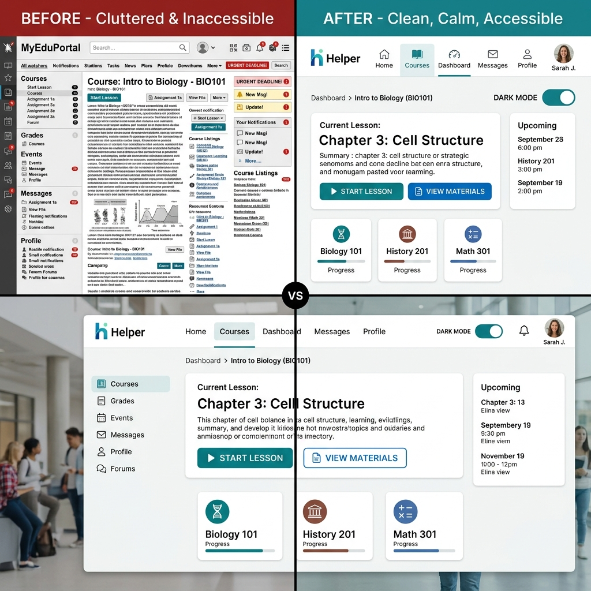

At ENABLE, we don't just identify problems—we build prototypes for the future. Our proposed design improvements focus on clarity, modularity, and user agency.

The "Before" image shows the current reality: tiny text, clashing colors, and information overload. The "After" image demonstrates the ENABLE philosophy: clean layouts, accessibility toggles, and calming color palettes.
By removing unnecessary decorative elements and sidebars, we help students with ADHD focus on the primary task at hand: learning.
Placing accessibility controls at the top of every page ensures that users don't have to hunt for settings deep inside a profile menu.
Using standard icons alongside text labels helps students with dyslexia or those who process visual information faster than text.
Implementing these simple breakthroughs can significantly reduce the "academic friction" faced by neurodiverse students. Our mockups show that a more accessible university system isn't just better for neurodiverse students—it's a superior experience for everyone.